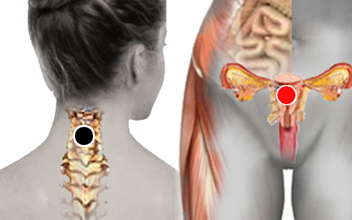

Vaginitis
Par
cervicales - útero *

También puede tener la polaridad invertida y responder como útero-atlas.
Generalidades:
La vaginitis es la inflamación de la vagina o de la vulva (parte externa de los órganos sexuales femeninos). No confundir con vaginismo, que más bien es un trastorno de tipo psicológico.
La vaginitis, en la mayoría de los casos, se deben a infección cuyos responsables pueden ser una amplia gama de patógenos. También debido a cambios en el medio que pueden alterar la flora bacteriana causando diversas molestias como inflamación, flujo vaginal con mal olor, ardor, picazón, entre otros. Es más frecuente en mujeres en edad reproductiva y sexualmente activas.
Causas:
Las causas principales pueden ser:
Existen una gran cantidad de patógenos que pueden generar esta condición por lo que el biomagnetista deberá hacer un rastreo exaustivo. Los más comunes son bacterias como Gardenerella, Yersinias, Bordetella, Ureaplasma U; virus: Papiloma humano, Herpes, VIH, hongo: Cándida, parásito: Tricomonas.
El biomagnetista podría preguntar por bioenergética si existen otros factores, además de los patógenos que puedan causar la afección. En tal caso recomendar, evitar el uso de ciertos productos, tener relaciones sexuales usando preservativo, usar ropa de algodón que no esté muy ajustada.
Pares relacionados: